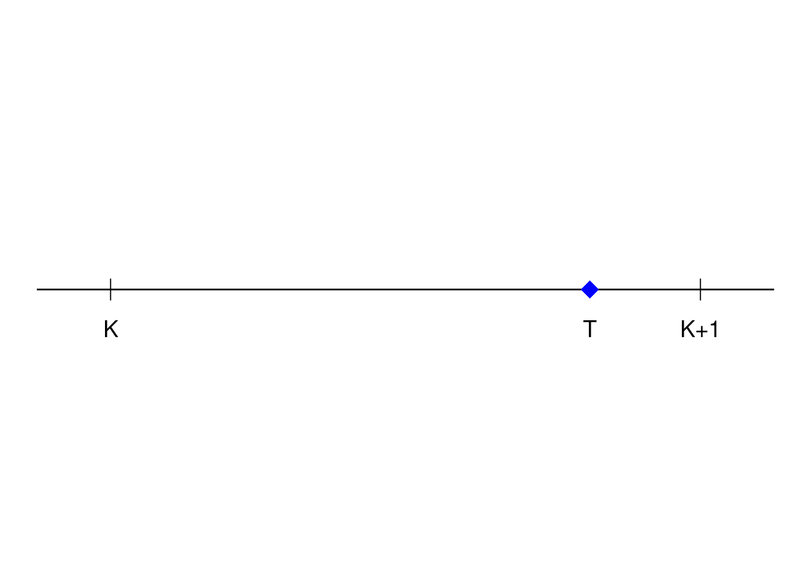
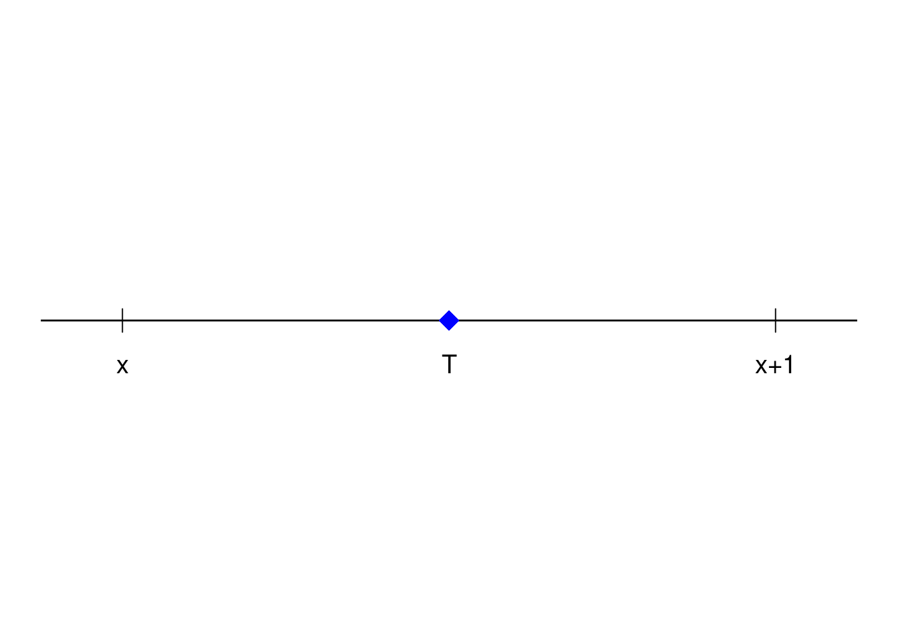
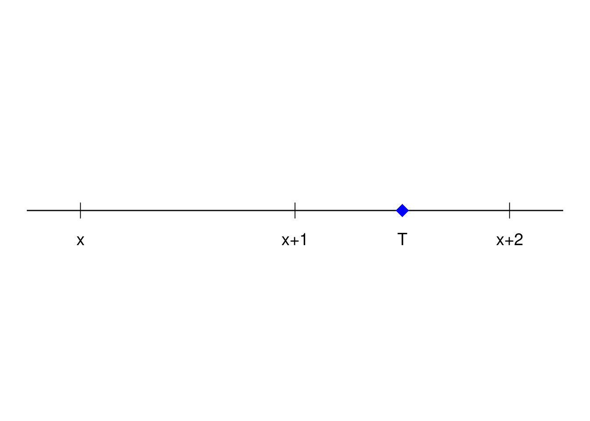
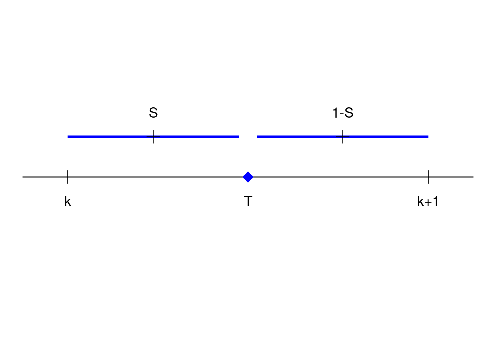

Antes de escolher o assunto a ser estudado, esteja ciente da necessidade do conhecimento prévio elencado na área sobre o curso
Utilidade: usar a tábua de vida e dispensar a especificação da função densidade de probabilidade de morte ou sobrevivência \(f_{T}(t)\)
Curtate-Future-Lifetime: anos completos de vida futura
Seja K = [T]
\(K = \begin{cases} v.a.\, discreta \\ maior\, inteiro \le T \\ parte\, inteira\, de\, T \end{cases}\) 
O pagamento é feito no tempo K+1 = [T]+1
Vida futura começa com a idade x
Notação:
A probabilidade de um indivíduo que contrata um seguro de vida com x anos venha a falecer entre as idades x e x+1 é denotado por: \[P(x \le x+T \le x+1\, |\, vivo\, em\, x) = q_x = \frac{d_x}{l_x}\]
A probabilidade de um indivíduo que contrata um seguro de vida com x anos sobreviva após K anos é denotado por: \[P(T > K\, |\, vivo\, em\, x) = {}_{k}p_x = \frac{l_{x+k}}{l_x}\]
A probabilidade de um indivíduo que contrata um seguro de vida com x anos é denotado por: \[P(T > 0\, |\, vivo\, em\, x) = {}_{0}p_x = 1\]
Distribuição de probabilidade da variável aleatória discreta K
A distribuição de K tem a presença de uma ista de valores possívels: 0, 1, 2, 3, … ou 0, 1, 2, 3, …, w-x; junto de suas respectivas probabilidades associadas: P(K = 0), P(K = 1), …
\(P(K = 0) = q_x = \frac{d_x}{l_x}\) 
\[P(K = 1) = p_x * q_{x+1} = \frac{l_{x+1}}{l_x} * \frac{d_{x+1}}{l_{x+1}} \Rightarrow P(K = 1) = \frac{d_{x+1}}{l_x}\] 
\[P(K = 2) = {}_{2}p_x * q_{x+2} = \frac{l_{x+2}}{l_x} * \frac{d_{x+2}}{l_{x+2}} \Rightarrow P(K = 2) = \frac{d_{x+2}}{l_x}\] De maneira geral:
\[P(K = j) = {}_{j}p_x * q_{x+j} = \frac{d_{x+j}}{l_x},\, \forall \, j = 0, 1, 2, ...\]
Onde j são os anos após a aquisição da apólice.
Valor do benefício para 1 u.m.:
\(b_{k+1} = \begin{cases} 1, \, k = 1, 2, ..., n-1 \\ 0, \,caso\, contrário \end{cases}\)
Fator de desconto:
\(V_{k+1} = V^{k+1}\)
Valor presente:
\(Z(t) = \begin{cases} V^{k+1},\, k = 1, 2, ..., n-1 \\ 0,\, c.c. \end{cases}\)
Valor presente atuarial:
\(A^1_{x:\overline{n|}} = \displaystyle\sum_{j = 0}^{n-1} 1 * V^{j+1} * P(k = j) = \displaystyle\sum_{j = 0}^{n-1} 1 * V^{j+1} * {}_{j}p_x * q_{x+j}\)
Comparando com o VPA contínuo:
\(\overline{A}^1_{x:\overline{n}|} = \displaystyle\int_0^n 1 * V^t * {}_{t}p_{x} * \mu(x+t) dt\)
A variância é dada por:
\(Var(Z) = {}^{2}A^1_{x:\overline{n}|} - (A^1_{x:\overline{n}|})^2\)
Onde:
\({}^{2}A^1_{x:\overline{n}|} = \displaystyle\sum_{j = 0}^{n-1} 1 * (V^2)^{j+1} * {}_{j}p_x * q_{x+j}\)
Paga 1 real no final do ano de morte
Semelhante ao seguro temporário de n anos, basta fazer n ir para infinito:
Valor presente:
\(Z(t) = 1 * V^{k+1}\)
Valor presente atuarial:
\(A_x = \displaystyle\sum_{j = 0}^{\infty} V^{k+1} * {}_{j}p_x * q_{x+j}\)
A variância é dada por:
\(Var(Z) = {}^{2}A_x - (A_x)^2\)
Na prática, \({}_{j}p_x = 0\) após j suficientemente grande
AT-2000 tem lx = 0 após w = 115 anos
Valor do benefício para 1 u.m.:
\(b_{k+1} = \begin{cases} 0,\, se\, 0 \le k \le n-1 \\ 1,\, se\, c.c. \end{cases}\)
Fator de desconto:
\(V_{k+1} = V^n,\, se\, t \ge 0\)
Valor presente:
\(Z = \begin{cases} 0,\, se\, 0 \le k \le n-1 \\ V^n,\, se\, k \ge n \end{cases}\)
Valor presente atuarial:
\(A_{x:\overline{n}|^1} = {}_{n}E_x = 0 * P(T \le n) + V^n * P(T > n) = V^n * {}_{n}p_x\)
A variância é dada por:
\(Var(Z) = V^{2*n} * {}_{n}p_x * {}_{n}q_x\)
Fator de desconto:
\(Z_1 = \begin{cases} V^{k+1},\, se\, 0 \le k \le n-1 \\ 0,\, se\, k \ge n \end{cases}\)
\(Z_2 = \begin{cases} 0,\, se\, 0 \le k \le n-1 \\ V^n,\, se\, k \ge n \end{cases}\)
\(Z = Z_1 + Z_2\)
Valor presente atuarial:
\(A_{x:\overline{n}|} = A^1_{x:\overline{n}|} + V^n * {}_{n}p_x\)
Note que \(Z = V^n\) se \(k = n-1\) ou se \(k \ge n\)
Paga 1 u.m. se vivo ao fim de n anos ou se morre antes de n anos, o pagamento é feito no final do ano de morte.
Seguro de vida inteira com um período de carência
Paga uma unidade após a morte somente se o segurado morrer pelo menos m anos após a emissão da apólice, sendo m o tempo de diferimento
Valor do benefício para 1 u.m.:
\(b_{k+1} = \begin{cases} 1,\, se\, k \ge m \\ 0,\, se\, 0 \le k \le m-1 \end{cases}\)
Fator de desconto:
\(V_{k+1} = V^{k+1},\, \forall\, k\)
Valor presente:
\(Z = \begin{cases} V^{k+1},\, k \ge m \\ 0,\, se\, 0 \le k \le m-1 \end{cases}\)
Valor presente atuarial:
\({}_{m|}A_x = \displaystyle\sum_{j = m}^\infty V^{j+1} * {}_{j}p_x * q_{x+j}\)
\({}_{m|}A_x = \displaystyle\sum_{l = 0}^\infty V^{m+l+1} * {}_{m+l}p_x * q_{x+m+l}\)
temos:
\({}_{m+l}p_x = {}_{m}p_x * {}_{l}p_{x+m}\)
então:
\({}_{m|}A_x = V^m * {}_{m}p_x * \displaystyle\sum_{l = 0}^\infty V^{l+1} * {}_{l}p_{x+m} * q_{x+m+l} = V^m * {}_{m}p_x * A_{x+m}\)
Ou seja, é um seguro de vida inteiro de x+m anos com um fator de desconto de m anos junto da probabilidade do indivíduo está vivo na idade x+m, trazida para o momento de aquisição da apólice.
Outra interpretação seria: O valor presente atuarial na idade x diferido por m anos é igual (ou equivalente) ao V.P.A. na idade x+m descontando m anos de juros e a possibilidade de morrer entre x e x+m
Outra forma de encontrar o seguro de capital diferido seria:
\({}_{m|}A_x = A_x - A^1_{x:\overline{m}|}\)
Um seguro de vida inteiro em x menos um seguro temporário de m anos.
Fim do ano: Utiliza-se tabela de vida, na prática, quase no momento de morte
Suposição:

\(T = [T] + S = K+S = K + 1 - (1-S)\)
Assuma que T é independente de S e que S ~ U(0, 1), então 1-S ~ U(0, 1).
Considere o seguro de vida inteira pago no momento de morte:
\(V.P. = Z = V^t\)
\(\overline{A}_x = \displaystyle\int_0^\infty V^t * f_T(t) dt = \displaystyle\int_0^\infty V^t * {}_{t}p_x * \mu(x+t) dt\)
Temos:
\(V.P. = Z = V^t\)
\(\overline{A}_x = E\Big(V^t\Big) = E\Big(V^{k+1-(1-S)}\Big) = E\Big(V^{k+1} * V^{-(1-S)}\Big)\)
\(\overline{A}_x = E\Big(V^{k+1} * V^{-(1-S)}\Big)\), com K independente de S
\(\overline{A}_x = A_x * E\Big(V^{-(1-S)}\Big)\)
mas
\(E\Big(V^{-(1-S)}\Big) = E\Big(e^{-\delta*(-(1-S))}\Big) = E\Big(e^{\delta*(1-S)}\Big)\)
\(E\Big(e^{\delta*(1-S)}\Big) = \displaystyle\int_0^1 e^{\delta*(1-S)} ds = \frac{e^\delta - 1}{\delta} = \frac{(1+i) - 1}{\delta}\)
Assim,
\(\overline{A}_x = \frac{i}{\delta} * A_x\)
\(\overline{A}^1_{x:\overline{n}|} = \frac{i}{\delta} * A^1_{x:\overline{n}|}\)
\(\overline{A}_{x:\overline{n}|} = \frac{i}{\delta} * A^1_{x:\overline{n}|} + V^n * {}_{n}p_x\)
\({}_{m|}\overline{A}_x = V^m * {}_{m}p_x * \frac{i}{\delta} * A_{x+m}\)
Baseado na tabela de vida, temos \(A_x = 0.353\), se a taxa instantânea de juros é de 3% a.a. então o V.P.A. do pagamento instantâneo é?
\(\overline{A}_x = \frac{e^\delta - 1}{\delta} * A_x \Rightarrow \overline{A}_x = \frac{e^0.03 - 1}{0.03} * 0.353 = 0.35835\)
Logo, pelo exemplo podemos perceber que o seguro de vida pago no momento de morte é maior que o seguro de vida inteira pago no final do ano de morte.
\(\overline{A}_x \ge A_x\)